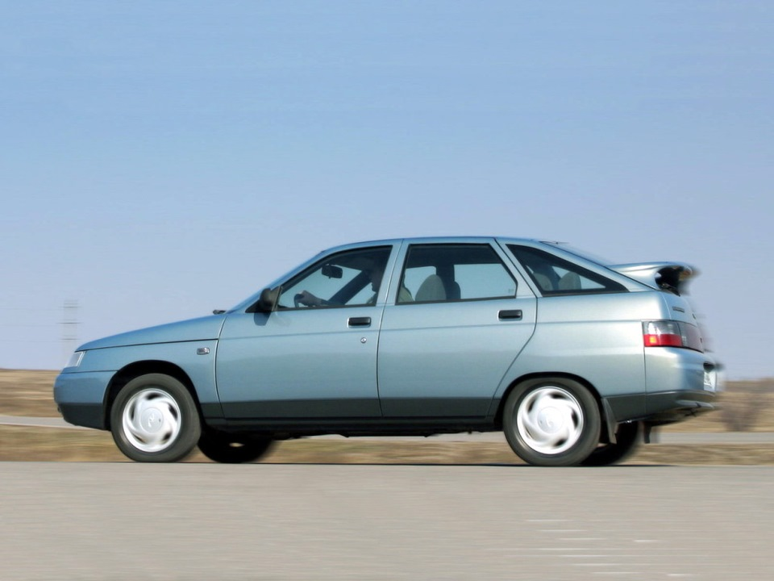
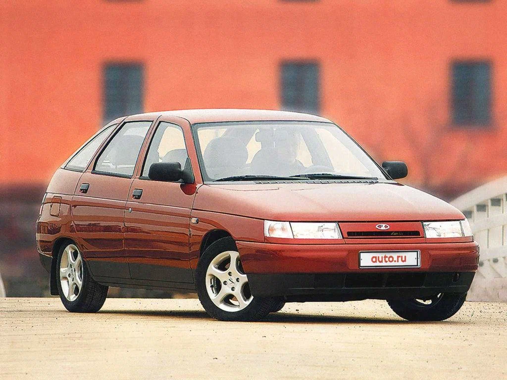
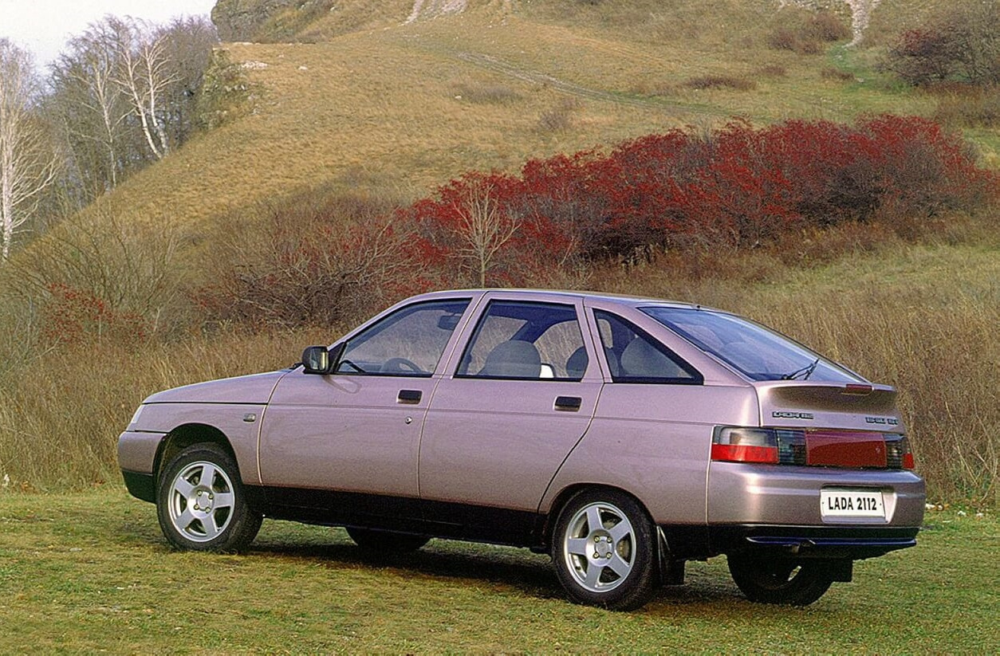
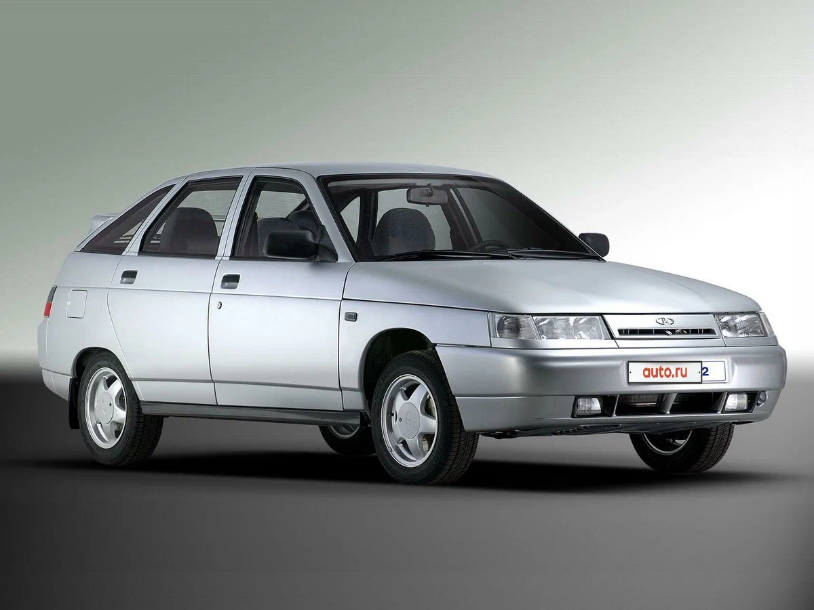
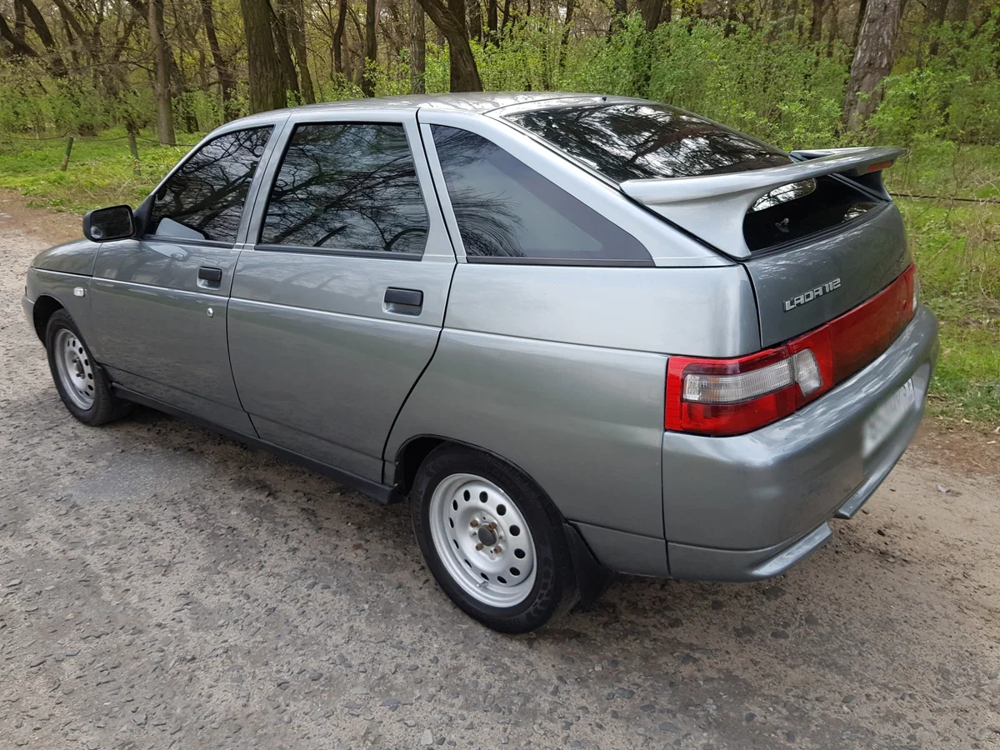
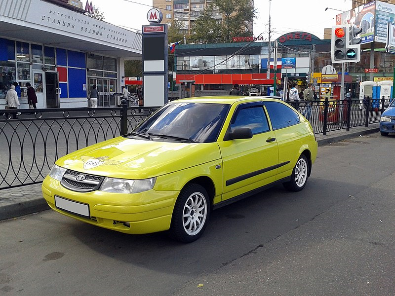
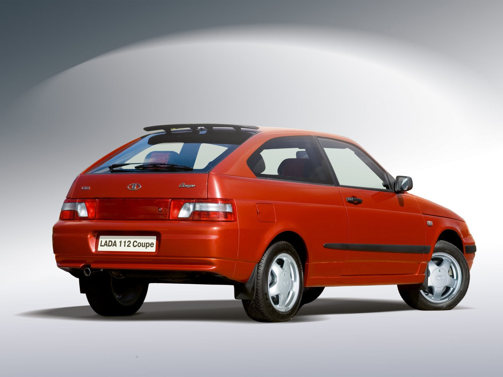

ВАЗ-2112 «Lada-112» (простореч. название двенашка) — переднеприводный хетчбэк на базе ВАЗ-2110, выпускался с 1998 по 2008 год. Производство модели началось с февраля 1998 года с укороченным (по сравнению с ВАЗ-2110) до 4170 мм кузовом (объём багажника 400 л), за счёт чего у машины более чёткие реакции на поворот рулевого колеса. У этой модели более спортивный характер управляемости, в сравнении с предшественниками. Автомобиль сочетает в себе все преимущества ВАЗ-2110, и заднее сиденье универсала 2111. Сохраняя все положительные качества автомобиля Лада-110, этот автомобиль обладает незначительными улучшениями: при небольшой длине кузова возможно увеличение маленького багажного отделения в большое при складывании заднего сиденья. Спинка заднего сиденья разделена на 2 части, которые могут складываться независимо друг от друга, благодаря этому сохраняется удобство «универсала» при перевозке малогабаритных грузов. С 2008 года производство ВАЗ-2112 на АвтоВАЗе было свёрнуто в пользу новой модели LADA Priora. Производство ВАЗ-2112 было перенесено на Украину в город Луцк на завод ЛуАЗ, где с 2007 года сборкой российских моделей Лада 2110, Лада 2111 и Лада 2112 занялась автомобильная корпорация «Богдан».
Трёхдверная модификация автомобиля ВАЗ-2112, кузов которой официально назывался «купе». Фактически, этот автомобиль является 3-дверным хетчбэком, сам термин «купе» — это не более чем маркетинговый ход. Выпуск производился малыми сериями с 2002 по 2009 годы, холдингом, объединившим фирмы «АвтоКомплект», «СпецАвто», «Рулевые системы» и «Тольяттинский механический завод». Модель трижды подвергалась небольшим рестайлингам. Изначально имела капот и бампер оригинальной конструкции. Затем выпускалась с бампером серии M, изменённой решёткой радиатора и стандартным капотом. Двигатель устанавливался 16-клапанный 1,6-литровый. Модель отличалась улучшенной отделкой и комплектацией по меркам семейства ВАЗ-2110. ВАЗ-21123 окрашивался в собственные цвета, отсутствующие в палитре конвейерных моделей семейства.
Ранний вариант:


Поздний вариант:


2112 купэ:

